SequenzのVolca Rackが来たのでレビューしてみる
はじめに
（個人的に）待望の、待望のvolca rackが来ました！
volca rack?
volcaといえば、KORGの生み出した大ヒット商品でして、個人的にも大好きなシリーズです。コンパクトな筐体にハイエンドモデル顔負けの要素をこれでもかと積み込んで、王道のポリフォニックなアナログシンセサイザーだったり、かと思えばキック音に特化しまくった超絶ニッチだけどスゴく使えるキックジェネレーターだったり、価格とサイズで攻めに攻めたセミモジュラーシンセサイザーなどなどを生み出してきたシリーズです。
そんなvolcaなんですが、どの機種でも筐体のサイズは全部一緒です。なので「ラックに格納したら良さげだよねー」というのがvolcaユーザーの思いでした。実際、DIYでvolca用のラックを作ってしまった人もいるようで、YouTubeなんかを見てるとたまに自作っぽいラックでvolcaをプレイしている動画なんかがあったりします。
そんな、多分誰もが「あったらいいよねー」と思っていたはずのラック。個人的にも結構欲しかったラック。それがこの度とうとうKORGオフィシャルで発売されました！
前置きが長くなりましたが、そのvolca rackを購入しましたのでレビューしてみよう！という記事です。
開封の儀
まずはおなじみな開封風景をどうぞ。
外箱から
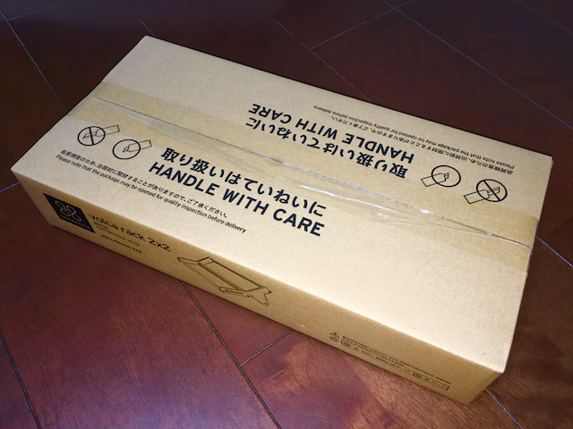
「取り扱いはていねいに」がデカデカと印字されておりますな。これに限りませんが、開封時のカッターは、品物本体を傷つけないよう気をつけたいものです。
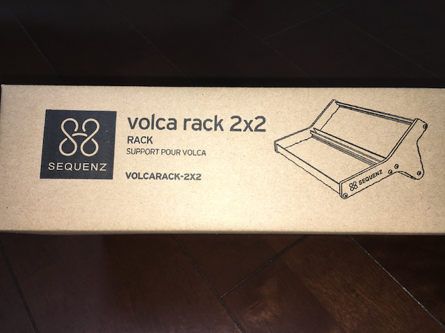
箱側面には「2x2」と印字されています。そう、合計4つのvolcaを設置できるわけです。
開封
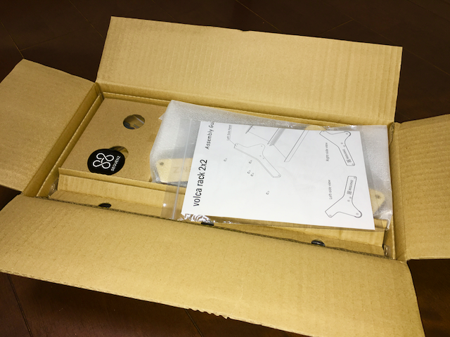
箱を開けた直後。簡単な組み立て説明書があります。
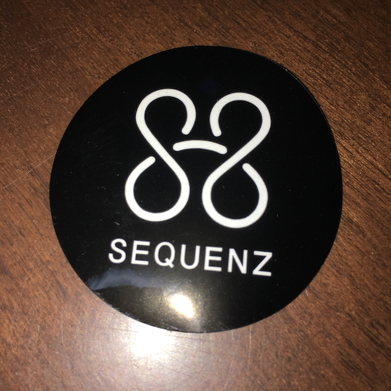
Sequenzの小さいステッカーが同梱されていました。
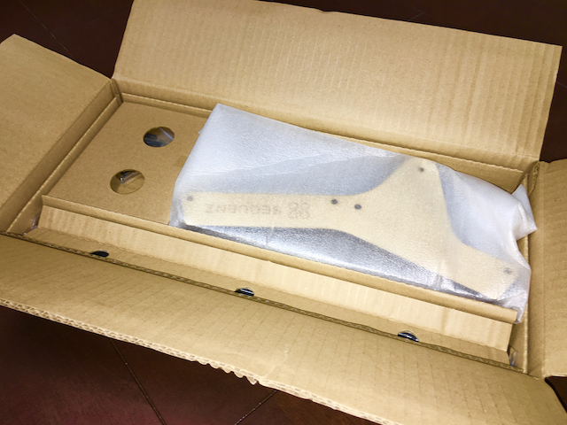
説明書などを取り出すと各パーツが収納されています。
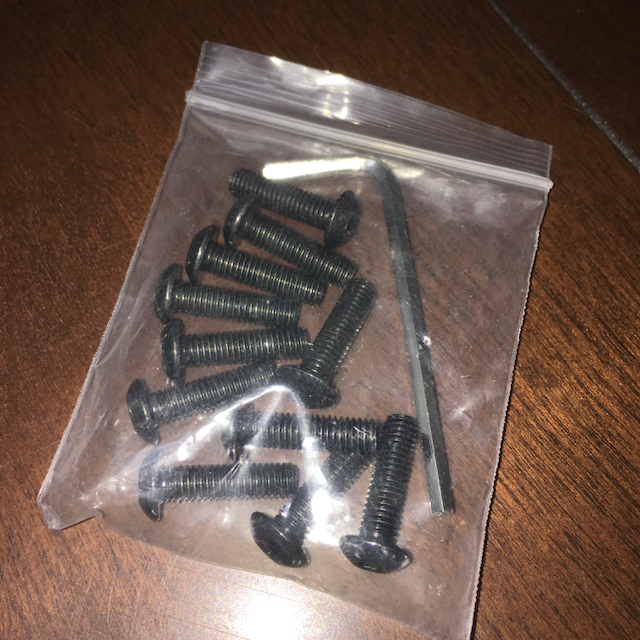
組み立ては6角レンチを用いてネジで行います。
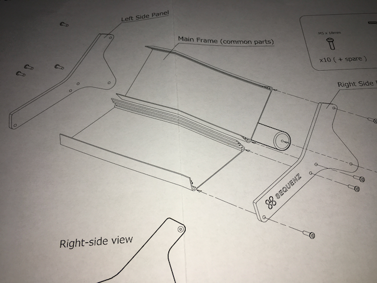
取説は英語表記ですがなんの問題もありません。というか、これは絵だけでもいいのでは、ってレベルです。簡単です、簡単。
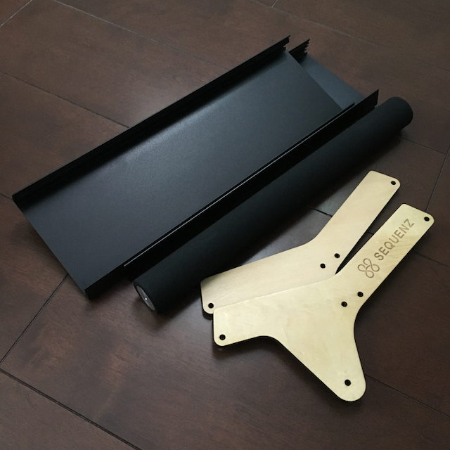
各パーツです。サイドパネルが木製なの、シンセサイザーラック然といった雰囲気でいいですよね。
なお、volcaを収納するメインパネルの内側には、滑り止めのゴムがあります。車のワイパーブレードみたいにはまっています。これのおかげでvolca本体の固定ができるわけですね。
完成
5分くらいで組み立ては完成します。簡単です。
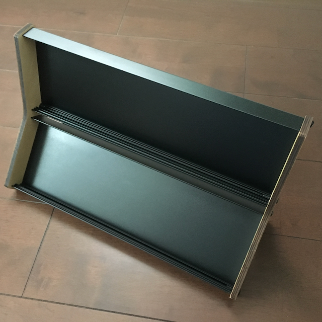
縦に設置するとこんな感じ。場所は取りませんが、この状態で操作するなら目線的には椅子が必須ですね。落ち着いて操作するにはこのポジションがいいかもしれません。
個人的に、インテリアとして置いておくにはこのポジションがベストだと思います。
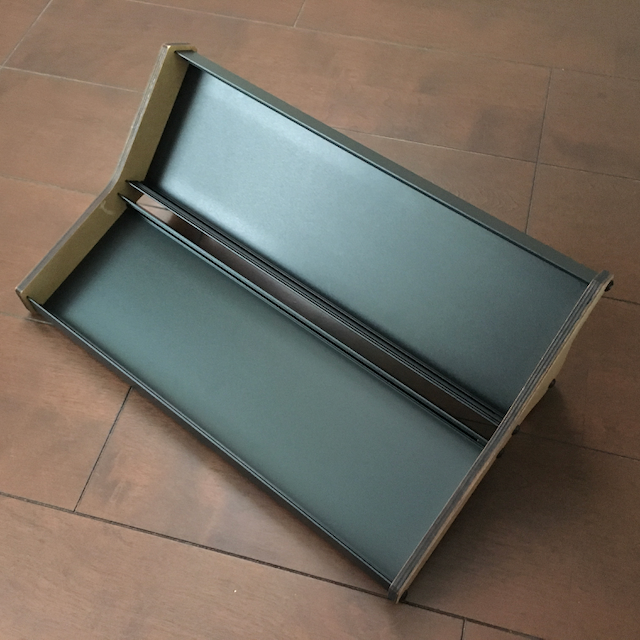
横に設置するとこんな感じ。立ちながら操作するなら、個人的にはこのポジションがベストです。
なお、ご想像のとおりで、縦置きセッティングのまま横置きへと移行することは、ラックの天地が逆転してしまうためできません。移行するためには、一度volcaをぜんぶ引っこ抜いてセッティングし直す必要があります。まぁ、そこは仕方ないですね。
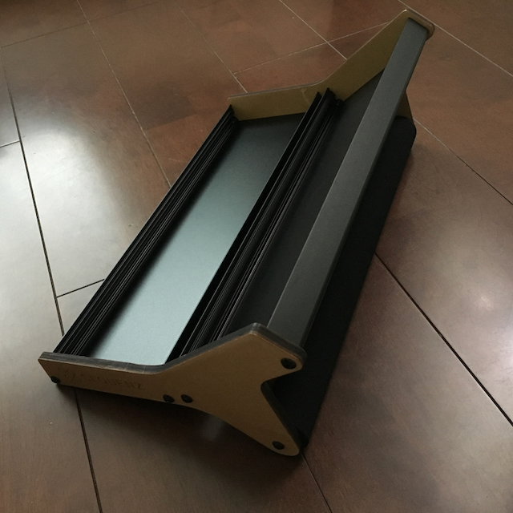
横から見るとこんな感じ。
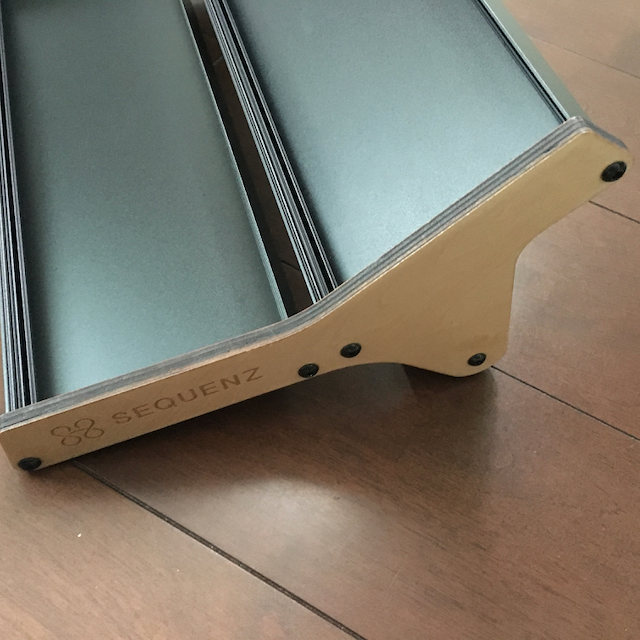
Sequenzのロゴが手前側だと、横置きです。
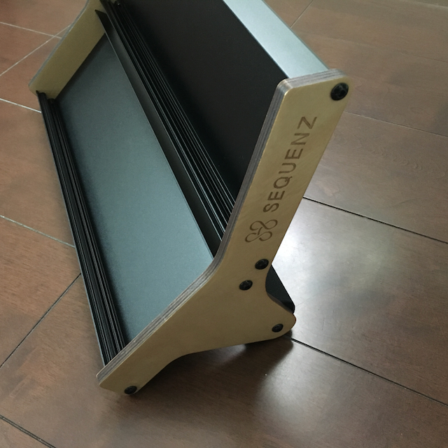
縦置きにするとサイドはこんな感じ。
とりあえず仮セッティング
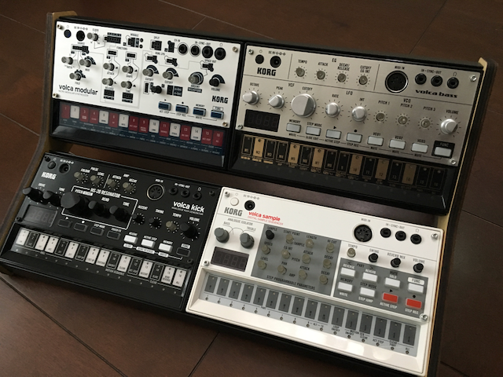
いいですねー！
単純に手持ちのvolcaを並べて見ましたが、それでもこの整然とした「ピッタリ感」はさすがオフィシャルと言えます。volcaをセッティングしたままインテリアとして置いておくとしても、なんの問題もない王道なデザインにグッときます。やっぱりこのサイドパネルが木製なのはいいですね（2回目
volcaは全面からはめ込んでいきます。このとき、はめ込むのにもラックから外すのも滑り止めのゴムが絶妙に支えてくれます。ケーブルを抜くのと一緒にvolcaが引っこ抜ける、なんてことはありませんでした。ただし、MIDIケーブルだけは結構しっかり挿さるので、さすがに本体を固定しないとラックからvolcaが釣れます_(:3」∠)_
自分はたまたまvolcaを4つ以上持っているので、問題ありませんでした。が、3つ以下しかなかったりするとラックに空きスペースができちゃうので、その空きスペースを埋めるためにまたvolcaシリーズを買うことになるでしょう。ええ、きっとそうなります（ぐるぐる目
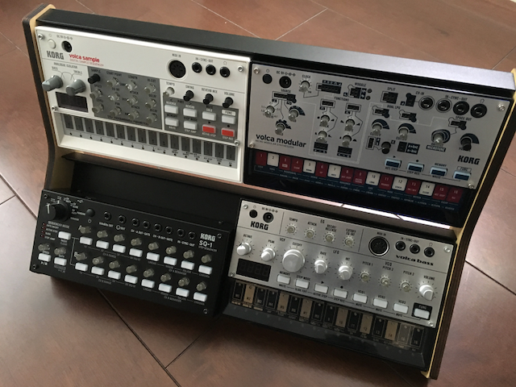
ちなみに、SQ-1も設置できます。ただし、写真の通り、縦は少し足りません。縦が足りないため、滑り止めのゴムが仕事をしないので、縦置き時には下段に収納しないと、ふとした瞬間に落下しそうでちょっと怖いです。ただ、SQ-1の給電がUSBケーブルで、本体の上側麺にコネクターがあるのを考えると、上に多少スペースが開いてないとUSBケーブルが挿せなくて困るというのもあるのですが・・・。ケーブルをうまく回避しつつ、空きスペースをなにかで埋めればなんとかなりそうな気もします。あるいはもう電池駆動を前提にしちゃうとか。
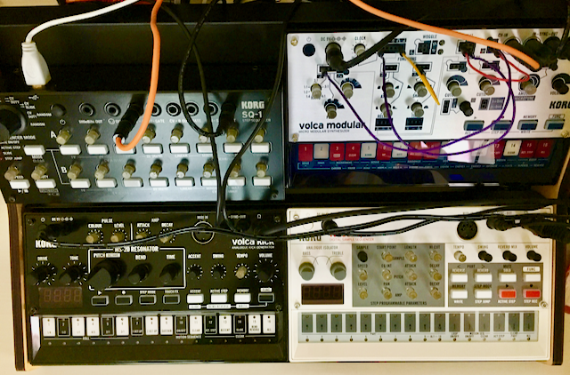
ちょっと見にくくて申し訳ないですが、SQ-1でvolca modularをCVでコントロールしつつ、kickとsampleでドラムパターンを組めるようなセットアップにしてみました。イイですねー_(:3」∠)_
まとめ
volcaを複数台持っているようなvolcaファンには必須です！
手持ちのvolcaを自由にセッティングでき、SQ-1も設置可能。その上インテリアとしてちゃんと成立するデザイン。非常にイイです。
volcaも（2019年6月16日現在で）また新しい機材がリリースされることですし、このラックにセッティングしてプレイしてみるのも一興かなと思います。
ああ、ウチのvolcaは今5台だからあと3台買えばもう1つラックにセッティングできるんだな・・・（ぐるぐる目